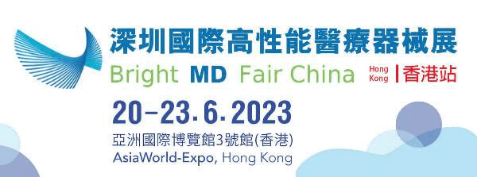

<?xml version="1.0" encoding="UTF-8"?><rss version="2.0"
	xmlns:content="http://purl.org/rss/1.0/modules/content/"
	xmlns:wfw="http://wellformedweb.org/CommentAPI/"
	xmlns:dc="http://purl.org/dc/elements/1.1/"
	xmlns:atom="http://www.w3.org/2005/Atom"
	xmlns:sy="http://purl.org/rss/1.0/modules/syndication/"
	xmlns:slash="http://purl.org/rss/1.0/modules/slash/"
	>

<channel>
	<title>訊通展覽公司</title>
	<atom:link href="" rel="self" type="application/rss+xml" />
	<link>https://www.paper-com.com.hk/tc</link>
	<description>Paper Communication Exhibition Services</description>
	<lastBuildDate>Fri, 22 Nov 2024 04:22:32 +0000</lastBuildDate>
	<language>zh-HK</language>
	<sy:updatePeriod>
	hourly	</sy:updatePeriod>
	<sy:updateFrequency>
	1	</sy:updateFrequency>
	<generator>https://wordpress.org/?v=6.8.1</generator>

<image>
	<url>https://www.paper-com.com.hk/wp-content/uploads/2019/02/cropped-papercom-32x32.png</url>
	<title>訊通展覽公司</title>
	<link>https://www.paper-com.com.hk/tc</link>
	<width>32</width>
	<height>32</height>
</image> 
	<item>
		<title>DMP大灣區工業博覽會 • 香港</title>
		<link>https://www.paper-com.com.hk/tc/blog/dmpshow2023-hk/</link>
		
		<dc:creator><![CDATA[papercom]]></dc:creator>
		<pubDate>Tue, 26 Mar 2024 03:35:16 +0000</pubDate>
				<category><![CDATA[展覽項目]]></category>
		<guid isPermaLink="false">https://www.paper-com.com.hk/?p=9211</guid>

					<description><![CDATA[　 　 DMP 大灣區工業博覽會•香港展示工業界驕人成就同期舉行創科論壇、創新發]]></description>
										<content:encoded><![CDATA[<div align="center">
<div class="su-row">
<div class="su-column su-column-size-1-1"><div class="su-column-inner su-u-clearfix su-u-trim">
<div style="padding: 5px; background-color: #03A9F4; color: #ffffff; font-size: 20px;"><strong>場刊</strong></div>
</div></div>
</div>
<div class="su-row">
<div class="su-column su-column-size-1-2"><div class="su-column-inner su-u-clearfix su-u-trim">
<div align="center"></a></div>
</div></div>
<div class="su-column su-column-size-1-2"><div class="su-column-inner su-u-clearfix su-u-trim">
<div align="center"></a></div>
</div></div>
</div>
<div class="su-row">
<div class="su-column su-column-size-1-2"><div class="su-column-inner su-u-clearfix su-u-trim">
<div align="center"><a href="https://download.wezhan.cn/contents/sitefiles2046/10231185/files/706598..pdf?response-content-disposition=inline%3Bfilename%3D%25e6%25b7%25b1%25e5%259c%25b3%25e5%258c%25bb%25e7%2596%2597%25e5%2599%25a8%25e6%25a2%25b0%25e5%25b1%2595-%25e9%25a6%2599%25e6%25b8%25af%25e7%25ab%2599%25e7%2594%25b5%25e5%25ad%2590%25e4%25bc%259a%25e5%2588%258anew%281%29%282%29.pdf&#038;response-content-type=application%2Fpdf&#038;auth_key=1711442989-b131325a9a244e1e9a4e7c8ecb72904d-0-1ce53568a709c196e552a107d51250d3" target="_blank" rel="noopener"></a></div>
</div></div>
<div class="su-column su-column-size-1-2"><div class="su-column-inner su-u-clearfix su-u-trim">
<div align="center"></a></div>
</div></div>
</div></div>
<p>　</p>
<div align="center"></div>
<p>　</p>
<div align="center">
<h4>DMP 大灣區工業博覽會•香港展示工業界驕人成就<br />同期舉行創科論壇、創新發明展等多項活動</h4>
</div>
<p>　　香港特區政府將致力推動創科發展，設立100億元「產學研1+計畫」，壯大人才庫，建立智慧香港，融入國家發展，打造香港成為國際創新科技中心。此外，政府已向創新科及技基金注資港幣20億元成立「再工業化資助計畫」，為在香港設立智慧生產線的製造商提供配對資助；在工業邨建立先進製造業設施，以鼓勵更多高增值及高科技生產製造商在香港設立工廠。透過發展先進智能製造技術，實現香港再工業化，可減輕香港經濟對服務業的依賴。<br />
　<br />
　　「訊通」憑藉30多年籌辦工業範疇展覽會經驗與各大專業協會緊密聯繫，已經成為香港與粵港澳大灣區的工業與經濟發展的一道橋樑。「訊通」將於2023年6月20-30日會在香港亞洲國際博覽會，主辦 “DMP大灣區工業博覽會•香港” 展示主題包括創新科技，智能製造，再工業化等，並配合香港特區政府推動科研、招商引資引才、開拓青年視野。</p>
<h4>展覽範圍</h4>
<ul>
<li><strong>智能製造機械人</strong><br />焊接機器人、噴塗機器人、搬運機器人、裝配機器人、智能倉儲機器人及系統、驅動系統</li>
<li><strong>傳動及感應裝置</strong>精密減速機、控制器、伺服電機、步進電機、夾具/抓手、氣缸及液壓缸、機器視覺系統及組件、直線運動/導軌設備、滾珠花鍵、滾珠螺桿和連桿球</li>
<li><strong>工業自動化核心智慧系統</strong><br />組裝及搬運系統/線性定位系統、工業圖像處理系統、工業用計算機通訊、網路和現場總線系統、嵌入式系統、傳感器和執行器、工業測量和測試系統、工業自動化數據獲取及辨別系統、激光技術、自動化服務、空壓技術與設備</li>
<li><strong>工業電氣及機械零部件</strong><br />電氣系統變壓器、電池及不斷電源、伺服電器及變頻器、軸承、齒輪、聯軸器等傳動部件、機械驅動系統、電線及電纜附件/連接器、線束、電氣控制系統用電氣開關裝置及設備、電工及光學部件、電力電工測試及檢測設備，各類工廠自動化零部件等</li>
</ul>
<p>　</p>
<h4>主辦單位</h4>
<ul>
<li>訊通展覽公司</li>
<li>廣東訊展會議展覽有限公司</li>
<li>上海訊展會議展覽有限公司</li>
<li>東莞訊展會議展覽有限公司</li>
<li>深圳訊通展覽有限公司</li>
</ul>
<p>　<br />
<br />Widget not in any sidebars<br /><span data-mce-type="bookmark" style="display: inline-block; width: 0px; overflow: hidden; line-height: 0;" class="mce_SELRES_start"></span><span data-mce-type="bookmark" style="display: inline-block; width: 0px; overflow: hidden; line-height: 0;" class="mce_SELRES_start"></span><span data-mce-type="bookmark" style="display: inline-block; width: 0px; overflow: hidden; line-height: 0;" class="mce_SELRES_start"></span><span data-mce-type="bookmark" style="display: inline-block; width: 0px; overflow: hidden; line-height: 0;" class="mce_SELRES_start"></span><span data-mce-type="bookmark" style="display: inline-block; width: 0px; overflow: hidden; line-height: 0;" class="mce_SELRES_start"></span><span data-mce-type="bookmark" style="display: inline-block; width: 0px; overflow: hidden; line-height: 0;" class="mce_SELRES_start"></span></p>
]]></content:encoded>
					
		
		
			</item>
		<item>
		<title>廣州精穩工業製品有限公司</title>
		<link>https://www.paper-com.com.hk/tc/blog/booth23-5a16/</link>
		
		<dc:creator><![CDATA[papercom]]></dc:creator>
		<pubDate>Wed, 28 Jun 2023 10:00:43 +0000</pubDate>
				<category><![CDATA[DMPhk展商連結及預告]]></category>
		<guid isPermaLink="false">https://www.paper-com.com.hk/?p=8661</guid>

					<description><![CDATA[廣州精穩工業製品有限公司，簡稱“精穩五金”，始創與2006年，主要生產及銷售工業五金結構件，服務各類工業自動化設備生產廠商，面向企業供應超過40,000款不同款式的現貨（涵蓋搭扣、鎖、鉸鏈、支撐、鎖扣、拉手、磁吸、夾具、插銷、汽車配套件等）配套選擇，實現產品配件的一站式採購；提供基於現貨的小批量產品改良定制和基於設計圖紙或樣品的產品量身定制服務，根據需求製造符合客戶安裝使用標準的產品，接受OEM及ODM產品委託。]]></description>
										<content:encoded><![CDATA[<p>廣州精穩工業製品有限公司，簡稱“精穩五金”，始創與2006年，主要生產及銷售工業五金結構件，服務各類工業自動化設備生產廠商，面向企業供應超過40,000款不同款式的現貨（涵蓋搭扣、鎖、鉸鏈、支撐、鎖扣、拉手、磁吸、夾具、插銷、汽車配套件等）配套選擇，實現產品配件的一站式採購；提供基於現貨的小批量產品改良定制和基於設計圖紙或樣品的產品量身定制服務，根據需求製造符合客戶安裝使用標準的產品，接受OEM及ODM產品委託。</p>
]]></content:encoded>
					
		
		
			</item>
		<item>
		<title>正昌環保科技﹙集團﹚有限公司</title>
		<link>https://www.paper-com.com.hk/tc/blog/booth23-5e25/</link>
		
		<dc:creator><![CDATA[papercom]]></dc:creator>
		<pubDate>Fri, 28 Jul 2023 07:34:42 +0000</pubDate>
				<category><![CDATA[DMPhk展商連結及預告]]></category>
		<guid isPermaLink="false">https://www.paper-com.com.hk/?p=8725</guid>

					<description><![CDATA[憑藉先進科技和超過30年的經驗，正昌集團一直致力提供專業環保技術及服務。]]></description>
										<content:encoded><![CDATA[<p>憑藉先進科技和超過30年的經驗，正昌集團一直致力提供專業環保技術及服務。業務包括:</p>
<ol>
<li>提供水處理技術，包括工業污水和生活污水的處理及回用的系統設計及安裝</li>
<li>提供潤滑油技術，包括廢油回煉再生系統設計及安裝、油品化驗服務及調配潤滑油技術</li>
<li>提供清潔生產顧問服務；集團是香港特別行政區環境保護署 「清潔生產伙伴計劃」顧問及工程服務供應商</li>
<li>提供環保技術及顧問服務，包括水及電力資源應用分析及節能系統的設計及安裝</li>
<li>供一站式環保服務，包括收集/處理/清理廢潤滑油、廢機油、廢水、廢電池及其他化學廢料</li>
</ol>
]]></content:encoded>
					
		
		
			</item>
		<item>
		<title>深圳市朗宇芯科技有限公司</title>
		<link>https://www.paper-com.com.hk/tc/blog/booth23-5e51/</link>
		
		<dc:creator><![CDATA[papercom]]></dc:creator>
		<pubDate>Thu, 27 Jul 2023 10:01:49 +0000</pubDate>
				<category><![CDATA[DMPhk展商連結及預告]]></category>
		<guid isPermaLink="false">https://www.paper-com.com.hk/?p=8691</guid>

					<description><![CDATA[深圳市朗宇芯科技有限公司，是一家專注於運動控制技術和工業機器人相關產品研發、生產、銷售的企業。產品包括工業機器人/機械臂控制系統、工業自動化控制系統、伺服系統等工業核心部件; 是國家高新技術企業、廣東省“專精特新”企業。]]></description>
										<content:encoded><![CDATA[<p>深圳市朗宇芯科技有限公司，是一家專注於運動控制技術和工業機器人相關產品研發、生產、銷售的企業。產品包括工業機器人/機械臂控制系統、工業自動化控制系統、伺服系統等工業核心部件; 是國家高新技術企業、廣東省“專精特新”企業。</p>
<p>作為專業的運動控制解決方案提供商，朗宇芯在註塑、機床、沖床、壓鑄、玻璃、噴塗、碼垛等行業領域，能夠為用戶提供專業的自動化、機器人/機械臂控制系統解決方案。</p>
]]></content:encoded>
					
		
		
			</item>
		<item>
		<title>Sumitech Engineering Solutions Limited</title>
		<link>https://www.paper-com.com.hk/tc/blog/booth23-6a23/</link>
		
		<dc:creator><![CDATA[papercom]]></dc:creator>
		<pubDate>Fri, 28 Jul 2023 04:31:33 +0000</pubDate>
				<category><![CDATA[DMPhk展商連結及預告]]></category>
		<guid isPermaLink="false">https://www.paper-com.com.hk/?p=8700</guid>

					<description><![CDATA[蘇敏特是一家專業從事精密金屬零件、塑膠零件、五軸零件、鈑金零件的生產加工、模塊化組裝和銷售為一體的高科技外資企業。專注於服務醫療、半導體、航空、能源、汽車、通訊、機器人等領域的零件加工。為滿足客戶日益提高的加工要求，公司引進德國進口德瑪吉五軸加工中心、美國哈斯五軸加工中心、國產四軸和三軸加工中心，數控車床、精密磨床、線切割、銑床、鑽床等高精密生產設備,為滿足產品的全方位檢測，公司配備德國進口蔡司CMM三次元、自動影像測量儀、高度儀、膜厚測試儀、硬度測試儀、粗超度測試儀、HRC硬度計等高精密檢測儀器。]]></description>
										<content:encoded><![CDATA[<p>蘇敏特是一家專業從事精密金屬零件、塑膠零件、五軸零件、鈑金零件的生產加工、模塊化組裝和銷售為一體的高科技外資企業。專注於服務醫療、半導體、航空、能源、汽車、通訊、機器人等領域的零件加工。為滿足客戶日益提高的加工要求，公司引進德國進口德瑪吉五軸加工中心、美國哈斯五軸加工中心、國產四軸和三軸加工中心，數控車床、精密磨床、線切割、銑床、鑽床等高精密生產設備,為滿足產品的全方位檢測，公司配備德國進口蔡司CMM三次元、自動影像測量儀、高度儀、膜厚測試儀、硬度測試儀、粗超度測試儀、HRC硬度計等高精密檢測儀器。</p>
]]></content:encoded>
					
		
		
			</item>
		<item>
		<title>東莞市翔鷺精密工具有限公司</title>
		<link>https://www.paper-com.com.hk/tc/blog/booth23-6e06/</link>
		
		<dc:creator><![CDATA[papercom]]></dc:creator>
		<pubDate>Fri, 28 Jul 2023 06:28:40 +0000</pubDate>
				<category><![CDATA[DMPhk展商連結及預告]]></category>
		<guid isPermaLink="false">https://www.paper-com.com.hk/?p=8706</guid>

					<description><![CDATA[廣東翔鷺精密製造有限公司係廣東翔鷺鎢業有限公司的全資子公司，成立於2017年10月，擁有東莞市翔鷺精密工具有限公司及江西翔鷺精密製造有限公司兩家全資子公司。翔鷺致力打造“集礦山開採，礦石冶煉，粉末生產，硬質合金，精密刀具製造”於一體的鎢製品完整產業鏈、致力於標準產品的標準化製造及非標，異型產品研發，現擁有ANCA、WALTER、ROLLOMATIC等五軸數控刀具磨床55台，PVD表面塗層1台，ZOLLER刀具自動檢測儀4台等生產主設備均從國外進口。打造集智能化，自動化於一體的生產先進線。]]></description>
										<content:encoded><![CDATA[<p>廣東翔鷺精密製造有限公司係廣東翔鷺鎢業有限公司的全資子公司，成立於2017年10月，擁有東莞市翔鷺精密工具有限公司及江西翔鷺精密製造有限公司兩家全資子公司。翔鷺致力打造“集礦山開採，礦石冶煉，粉末生產，硬質合金，精密刀具製造”於一體的鎢製品完整產業鏈、致力於標準產品的標準化製造及非標，異型產品研發，現擁有ANCA、WALTER、ROLLOMATIC等五軸數控刀具磨床55台，PVD表面塗層1台，ZOLLER刀具自動檢測儀4台等生產主設備均從國外進口。打造集智能化，自動化於一體的生產先進線。</p>
]]></content:encoded>
					
		
		
			</item>
		<item>
		<title>東莞市藍鯨陶瓷科技有限公司</title>
		<link>https://www.paper-com.com.hk/tc/blog/booth23-6e16/</link>
		
		<dc:creator><![CDATA[papercom]]></dc:creator>
		<pubDate>Fri, 28 Jul 2023 06:35:44 +0000</pubDate>
				<category><![CDATA[DMPhk展商連結及預告]]></category>
		<guid isPermaLink="false">https://www.paper-com.com.hk/?p=8713</guid>

					<description><![CDATA[科眾陶瓷是一家專業的精密陶瓷產品供應商，具有精密陶瓷產品研發、成型、燒結、加工、檢測一整套完整的精密陶瓷產品生產能力，可按客戶需求來圖、來樣定制生產各種精密陶瓷產品。主要生產氧化鋯、氧化鋁、氮化矽、碳化矽、氮化硼、氮化鋁、ZTA等工業陶瓷材料。科眾陶瓷是一家產、銷一體化的企業，旗下香港公司擁有進出口權，生產工廠位於有“世界工廠”之稱的東莞，擁有掌握成熟精密陶瓷產品生產工藝的技術人才。客戶主要分佈在中國大陸、中國香港、中國台灣、日本、韓國、印度、新加坡、馬拉西亞、澳大利亞、加拿大、德國、美國等國家地區，生產的精密陶瓷產品被廣泛應用於量具、泵閥、鋰電池、半導體、電子電器、智能穿戴、激光、石油、化工、醫療、食品、光伏、軍工、航空航天等行業領域。]]></description>
										<content:encoded><![CDATA[<p>　　科眾陶瓷是一家專業的精密陶瓷產品供應商，具有精密陶瓷產品研發、成型、燒結、加工、檢測一整套完整的精密陶瓷產品生產能力，可按客戶需求來圖、來樣定制生產各種精密陶瓷產品。主要生產氧化鋯、氧化鋁、氮化矽、碳化矽、氮化硼、氮化鋁、ZTA等工業陶瓷材料。科眾陶瓷是一家產、銷一體化的企業，旗下香港公司擁有進出口權，生產工廠位於有“世界工廠”之稱的東莞，擁有掌握成熟精密陶瓷產品生產工藝的技術人才。客戶主要分佈在中國大陸、中國香港、中國台灣、日本、韓國、印度、新加坡、馬拉西亞、澳大利亞、加拿大、德國、美國等國家地區，生產的精密陶瓷產品被廣泛應用於量具、泵閥、鋰電池、半導體、電子電器、智能穿戴、激光、石油、化工、醫療、食品、光伏、軍工、航空航天等行業領域。</p>
<p>　　今後將進一步發揮自身的在產品質量、成本控制和交期上的優勢，進一步拓展全球市場，為全球企業繼續提供優質的精密陶瓷產品與服務。</p>
<p>　　科眾陶瓷擁有ISO9001-2015質量管理認證證書，採取ISO、ERP及自創的四重品質管理機制，在產品生產過程中嚴格執行當前工藝自檢，下個生產環節對上個生產環節的結果復檢，出廠產品整體品檢，問題產品進行在線質量管理系統登記並分析原因及找出解決方案，避免二次出現問題，提供良品率，實現出廠產品100%符合客戶要求的最終目標。</p>
]]></content:encoded>
					
		
		
			</item>
		<item>
		<title>東莞市凱保精密機械有限公司</title>
		<link>https://www.paper-com.com.hk/tc/blog/booth23-6e19/</link>
		
		<dc:creator><![CDATA[papercom]]></dc:creator>
		<pubDate>Fri, 28 Jul 2023 06:55:29 +0000</pubDate>
				<category><![CDATA[DMPhk展商連結及預告]]></category>
		<guid isPermaLink="false">https://www.paper-com.com.hk/?p=8715</guid>

					<description><![CDATA[Dongguan Kaibao Precision Machinery Co., Ltd. Was Established In 2009, Located In Dongguan Guangdong，Mainly Produces Pneumatic Sanders , Electronic Sanders，Air Polisher，Electronic Polisher Air Angle Grinders,Air Die Grinders, Air Die Grinding Pens Professional Automated Manipulators Polishers And Sanding Backup Pads. Most Of Our Products Are Export To Europe,North America,Asia,Australia.]]></description>
										<content:encoded><![CDATA[<p>Dongguan Kaibao Precision Machinery Co., Ltd. Was Established In 2009, Located In Dongguan Guangdong，Mainly Produces Pneumatic Sanders , Electronic Sanders，Air Polisher，Electronic Polisher Air Angle Grinders,Air Die Grinders, Air Die Grinding Pens Professional Automated Manipulators Polishers And Sanding Backup Pads. Most Of Our Products Are Export To Europe, North America, Asia, Australia.</p>
<p>We Have Our Brand “Pandas” And “Super” That Are For Air Sanders That Are Well Received By Our Customers.</p>
]]></content:encoded>
					
		
		
			</item>
		<item>
		<title>廣州方川潤滑科技有限公司</title>
		<link>https://www.paper-com.com.hk/tc/blog/booth23-6e21/</link>
		
		<dc:creator><![CDATA[papercom]]></dc:creator>
		<pubDate>Fri, 28 Jul 2023 07:05:45 +0000</pubDate>
				<category><![CDATA[DMPhk展商連結及預告]]></category>
		<guid isPermaLink="false">https://www.paper-com.com.hk/?p=8719</guid>

					<description><![CDATA[公司成立於2005年，作為國家高新技術企業、廣東省“專精特新”企業，是廣東省潤滑油行業協會金屬加工液分會會長單位，廣州市新材料產業發展促進會會員單位，也是美國磨潤協會(STLE）會員。公司被評為廣東省守合同重信用企業、黃埔區瞪羚企業，主營切削液、防銹油、壓鑄鑄造材料等系列產品，堅持質量求生存，以誠信求發展，做中國人自己的產品，堅持在細分領域將產品做到極致。]]></description>
										<content:encoded><![CDATA[<p>公司成立於2005年，作為國家高新技術企業、廣東省“專精特新”企業，是廣東省潤滑油行業協會金屬加工液分會會長單位，廣州市新材料產業發展促進會會員單位，也是美國磨潤協會(STLE）會員。公司被評為廣東省守合同重信用企業、黃埔區瞪羚企業，主營切削液、防銹油、壓鑄鑄造材料等系列產品，堅持質量求生存，以誠信求發展，做中國人自己的產品，堅持在細分領域將產品做到極致。</p>
]]></content:encoded>
					
		
		
			</item>
		<item>
		<title>深圳華盛昌科技實業股份有限公司</title>
		<link>https://www.paper-com.com.hk/tc/blog/booth23-6f11/</link>
		
		<dc:creator><![CDATA[papercom]]></dc:creator>
		<pubDate>Fri, 28 Jul 2023 08:10:46 +0000</pubDate>
				<category><![CDATA[DMPhk展商連結及預告]]></category>
		<guid isPermaLink="false">https://www.paper-com.com.hk/?p=8734</guid>

					<description><![CDATA[公司自1991年成立以來30餘年，作為中國專業儀器儀表製造業的領頭羊---深圳華盛昌科技實業股份有限公司專注於紅外熱像儀，數字萬用表，鉗形表，紅外線測溫儀，絕緣測試器，電力測試器，激光測距儀，多功能測試儀器, 移動電源等擁有自主知識產權的系列產品;同時不斷開創新技術，目前在國內外擁有的有效專利權上百種，產品廣泛應用於電力，暖通製冷，消防，石油化工，電子製造，環境治理等專業領域，深受客戶的信賴與好評。]]></description>
										<content:encoded><![CDATA[<p>公司自1991年成立以來30餘年，作為中國專業儀器儀表製造業的領頭羊&#8212;深圳華盛昌科技實業股份有限公司專注於紅外熱像儀，數字萬用表，鉗形表，紅外線測溫儀，絕緣測試器，電力測試器，激光測距儀，多功能測試儀器, 移動電源等擁有自主知識產權的系列產品;同時不斷開創新技術，目前在國內外擁有的有效專利權上百種，產品廣泛應用於電力，暖通製冷，消防，石油化工，電子製造，環境治理等專業領域，深受客戶的信賴與好評。</p>
]]></content:encoded>
					
		
		
			</item>
	</channel>
</rss>
